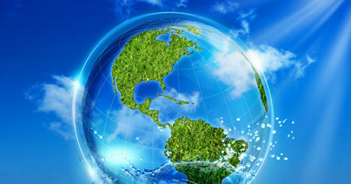
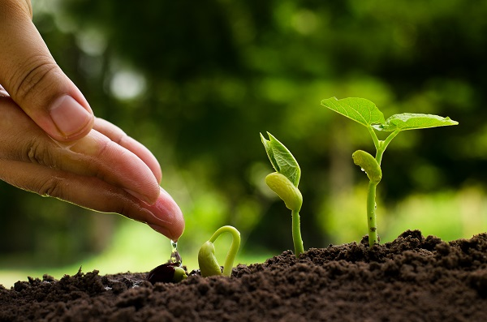

A Importância da Sustentabilidade da água
A sustentabilidade da água é uma das questões mais críticas que afetam a humanidade. A população mundial cresce. Nossas cidades se espalham. O comércio global e crescimento econômico continuam aumentando. Junto com esse progresso vem a realidade de que os recursos naturais do mundo estão em declínio, e no topo desta lista está a água.
A água é um recurso natural essencial para vida. Porém, com o passar dos anos a sociedade foi usando a água cada vez mais sem a consciência de que um dia ela pode acabar, seja em virtude da poluição, da degradação ambiental e das mudanças climáticas, provocada pelas atividades humanas.
O volume de água no planeta é estável, mas a sua disponibilidade varia bastante, de acordo com a região. Cerca de 97,5% de toda água na Terra é salgada. Apenas 2,5% é doce, sendo que desta parcela, 1,72% está congelada nos polos Sul e Norte e geleiras no alto de montanhas e 0,75% são águas subterrâneas. Faz parte da constituição das plantas e animais, 0,02%, restando apenas 0,01% de toda água do planeta disponível em rios, lagos e represas.
O Brasil detém 13% das reservas de água doce do planeta, porém a taxa de desperdício é elevada e a situação se agrava diante da crise hídrica que o país enfrenta. Não é raro encontrar a despreocupação de escovar os dentes com a permanência da torneira aberta, lavagem de ruas e calçadas com jatos d’água ou a lavagem de veículos com água tratada.
Porém, no mundo, estima-se que atualmente, 1,7 milhão de pessoas sofrem com a escassez de água. Esta dificuldade também pode estar associada a fatores qualitativos, ocasionados, por exemplo, pela disposição inadequada de resíduos sólidos, comumente chamado lixo. 
O comprometimento da qualidade da água pode inviabilizar o uso ou tornar impraticável o tratamento, tanto em termos técnicos quanto financeiros. Diversas são as substâncias tóxicas geradas nas diferentes atividades humanas. Nas práticas agrícolas, por exemplo, o uso sem controle de defensivos químicos pode representar um grande perigo ao meio ambiente, aos ecossistemas e à saúde humana.
Dessa forma, é preciso que haja a racionalização de consumo, acrescida do estabelecimento de estratégias de reuso, tanto práticas agrícolas quanto nas atividades cotidianas residenciais, comerciais e industriais. Porque o consumo sustentável quer dizer saber usar os recursos naturais para satisfazer as nossas necessidades, sem comprometer as necessidades e aspirações das gerações futuras.
Aparelhos eletrônicos e lâmpadas ligados sem necessidade também indicam desperdício de água. Isto porque a maior parte da energia do Brasil é gerada em usinas hidrelétricas (quase 90%) e seu potencial hídrico está associado à vazão do rio e à quantidade de chuvas.
Por ser muito utilizada também para fins industriais, agrícolas, de navegação e pesca, a preservação da qualidade da água depende de iniciativas de combate à contaminação por esgoto, agrotóxicos, lixo e outras formas de poluição.
Saiba como prevenir o desperdício na sua empresa e além de ajudar a preservar os recursos naturais potencialize seus lucros reduzindo custos.
CONFIRA 10 DICAS DE SUSTENTABILIDADE